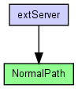

(no description)
The following diagram shows usage relationships between types. Unresolved types are missing from the diagram. Click here to see the full picture.
The following diagram shows inheritance relationships for this type. Unresolved types are missing from the diagram. Click here to see the full picture.
| DatarateChannel (channel) | (no description) |
| extServer (network) | (no description) |
| Name | Type | Default value | Description |
|---|---|---|---|
| disabled | bool | false | |
| delay | double | 0.0565us |
propagation delay |
| datarate | double | 100Mbps |
bits per second; 0=infinite |
| ber | double | 0 |
bit error rate (BER) |
| per | double | 0 |
packet error rate (PER) |
| Name | Value | Description |
|---|---|---|
| class | cDatarateChannel |
channel NormalPath extends DatarateChannel { parameters: datarate = 100Mbps; delay = 0.0565us; // 10m per = 0; ber = 0; }